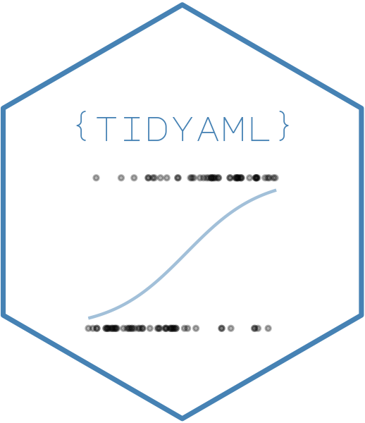

Select a LightTAR recipe before running fast regression
Source:R/gated-fast-regression.R
gated_fast_regression.RdCompare PCA-only and PCA-plus-PLS preprocessing with a single regression model on shared inner cross-validation folds. Choose LightTAR only when it improves mean fold RMSE. Fit the final model grid to the whole outer training split and use its untouched testing split for prediction.
Usage
gated_fast_regression(
.data,
.outcome_var,
.emb_cols,
.gate_eng = "xgboost",
.u_pca = 30L,
.s_pls = 5L,
.m = 60,
.v = 5L,
.parsnip_fns = "all",
.parsnip_eng = "all",
.gate_fn = NULL,
.split_args = NULL,
.seed = NULL
)Arguments
- .data
A data frame containing embeddings, an outcome, and any other predictors. Supply precomputed numeric embeddings; no encoder is run.
- .outcome_var
Name of one numeric or factor outcome column.
- .emb_cols
Nonempty character vector of unique numeric embedding column names, excluding the outcome.
- .gate_eng
One
parsnipengine for the inner comparison. The default"xgboost"requires thexgboostpackage;"lm"is a lightweight option.- .u_pca
Positive integer: maximum number of PCA components.
- .s_pls
Non-negative integer: maximum number of supervised components. Set to
0for PCA only.- .m
Non-negative input-variance weight. The fitted PLS penalty is
.m / n, wherenis the number of training rows. Use0for plain PLS.- .v
Number of inner cross-validation folds (at least two).
- .parsnip_fns
The default is 'all' which will create all possible regression model specifications supported.
- .parsnip_eng
the default is 'all' which will create all possible regression model specifications supported.
- .gate_fn
Optional
parsnipmodel name for the gate, required if.gate_engmatches more than one regression specification.- .split_args
Optional arguments for
rsample::initial_split(), the outer split. The outer split must leave enough rows for.vfolds.- .seed
Optional integer seed for splitting and fitting. A supplied seed leaves the caller's R RNG state unchanged.
Value
A fast_regression() model table (fst_reg_tbl) with an attribute
.lighttar_selected ("pca" or "lighttar") and .lighttar_gate, a
tibble with fold, recipe, and rmse columns (failed folds have NA).
Details
The outcome must be numeric and finite. Ties (including numerical
differences close to zero) favor PCA. If any LightTAR fold fails, a warning
is issued and PCA is used. If PCA cannot be scored on every fold, the
function stops instead of making an unverified choice. The final grid uses
the model filters from fast_regression(); if no fit produces predictions,
the function stops.
Examples
models <- gated_fast_regression(
mtcars, "mpg", c("disp", "hp", "wt"),
.gate_eng = "lm",
.u_pca = 1, .s_pls = 1, .parsnip_eng = "lm", .seed = 280L
)
attr(models, ".lighttar_gate")
#> # A tibble: 10 × 3
#> fold recipe rmse
#> <chr> <chr> <dbl>
#> 1 Fold1 pca 3.44
#> 2 Fold2 pca 2.95
#> 3 Fold3 pca 5.07
#> 4 Fold4 pca 13.3
#> 5 Fold5 pca 3.24
#> 6 Fold1 lighttar 3.27
#> 7 Fold2 lighttar 2.69
#> 8 Fold3 lighttar 5.02
#> 9 Fold4 lighttar 14.1
#> 10 Fold5 lighttar 5.87